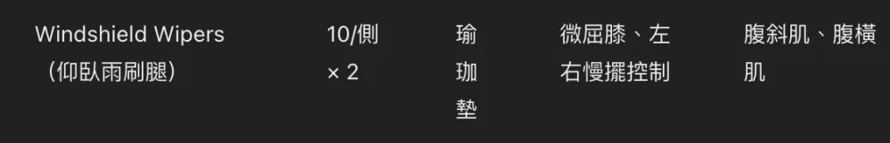
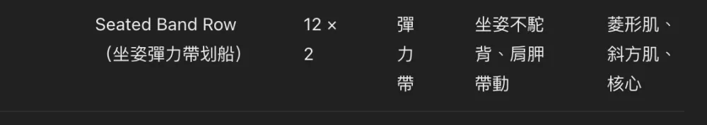
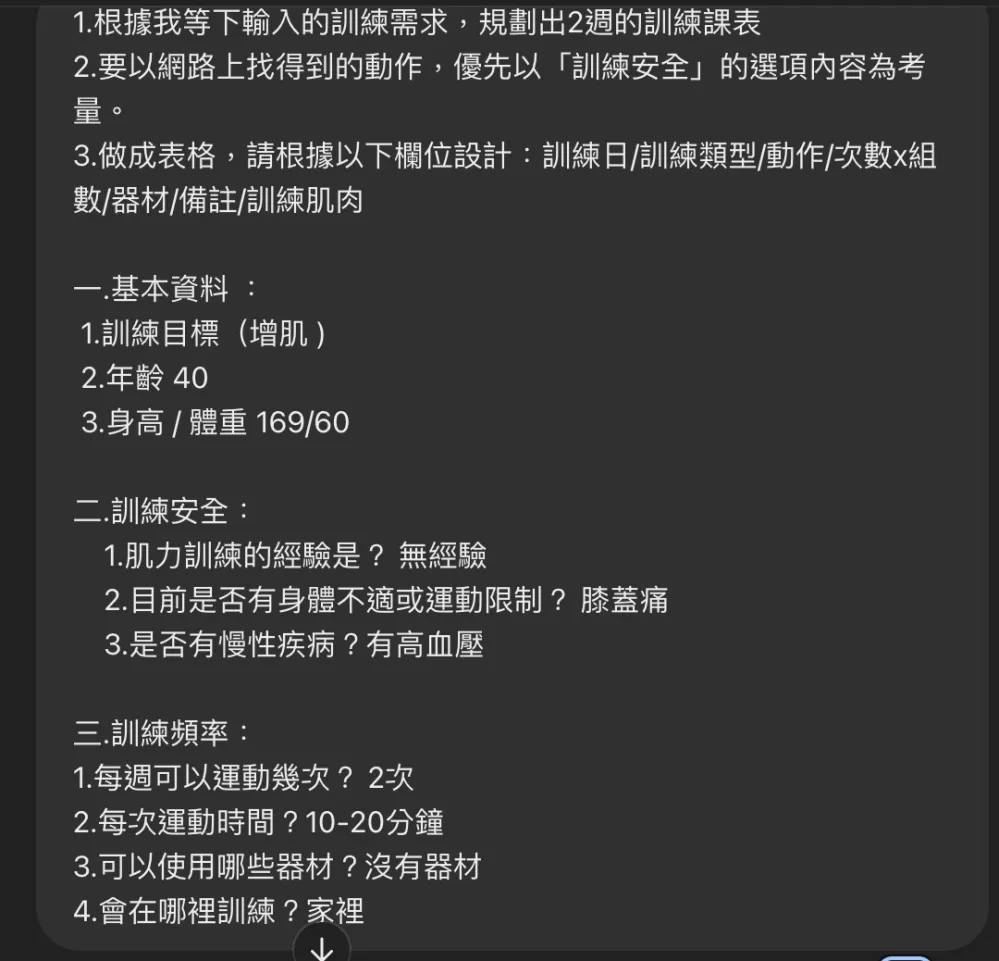
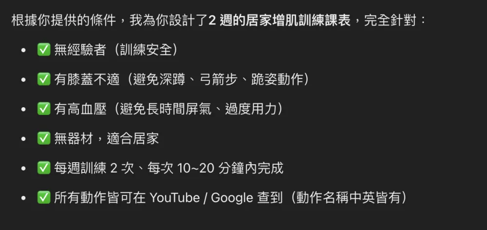
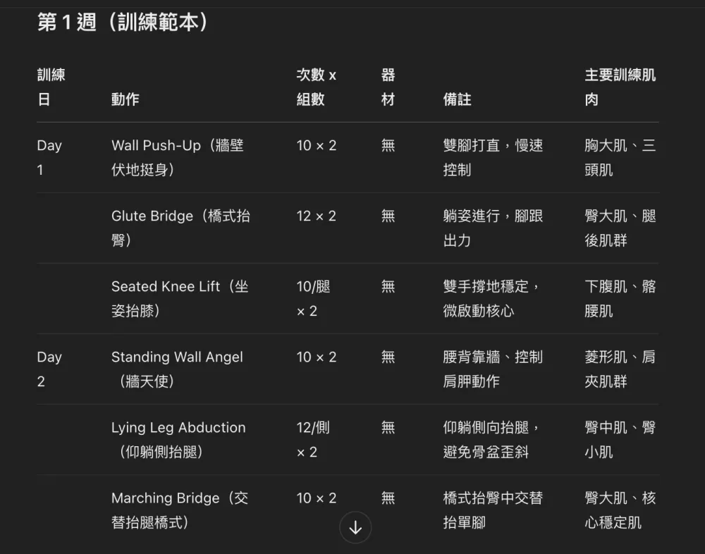

如何用 ChatGPT，做自己的肌力訓練課表？
兩段可以直接複製的指令，讓 ChatGPT 依你的狀況排出訓練課表；也說清楚 AI 開課表目前還做不好的兩件事。
發表於 2025 年 4 月 4 日
我本來想說，可以教大家怎麼用 AI 生成一份安全又有效的訓練課表……
但我測試了幾輪，還是遇到一些障礙。
障礙一：AI 找的動作，你可能搜尋不到
它會生成一些動作，你用 Google 有可能查不到。
像這個：如果你直接上網搜尋 Windshield Wiper，可能會先找到雨刷的購物網站。用中文找，就更找不到了……

障礙二：AI 給的動作，不一定是安全的
尤其在核心動作上，有些動作要不就是難度太高，要不就是訓練效果有限。
像這個：坐姿彈力帶划船，這動作比較容易肩膀痠，要做對其實不容易。

在選擇動作上，AI 只能給出 60 分的動作給你。如果你是完全的健身新手，可能也沒辦法分辨它給的動作是否適合你。
照它的課表操作，沒事就還好；但如果動作操作不當，是真的可能會受傷。
對教練來說，AI 在規劃課表上會省下蠻多時間。我自己要規劃一個 8～12 週的課表，或是要幫會員想自主訓練課表，用 GPT 其實很快又很有效率。
只是要一個小白用 AI 生成適合自己的課表，我當時還沒想到方法。
但我還是可以分享給你，我給 AI 的指令，你可以參考。
步驟一：給指令
直接複製貼上就好：
1. 根據我等下輸入的訓練需求，規劃出 __ 週的訓練課表 2. 要以網路上找得到的動作，優先以「訓練安全」的選項內容為考量。 3. 做成表格，請根據這些欄位設計：訓練日／訓練類型／動作／次數 x 組數／器材／備註／訓練肌肉
步驟二：貼上你的基本運動資料
括號內的選項，依你的狀況填寫，一樣複製貼上就好。
一、基本資料 1. 訓練目標（增肌／減脂／提升力量／改善心肺／改善關節疼痛） 2. 年齡 3. 身高／體重 二、訓練安全 1. 肌力訓練的經驗是？（無經驗／一年以內／一年以上） 2. 目前是否有身體不適或運動限制？（寫出你不能做的動作，或是什麼關節會痛） 3. 是否有慢性疾病？（是的話，可以寫出來） 三、訓練頻率 1. 每週可以運動幾次？（1 次／2 次／3 次／4 次／5 次） 2. 每次運動時間？（5–10 分鐘／10–20 分鐘／20–30 分鐘／30–45 分鐘／45–60 分鐘） 3. 可以使用哪些器材？（沒有器材／瑜伽墊／彈力帶／啞鈴……） 4. 會在哪裡訓練？（家裡／健身房／戶外）
貼上去就會長這樣：

GPT 跑出的畫面：

你如果不知道那是什麼動作，可以再上網 Google 一下。

用 AI 設計課表的注意事項
- 你可以更進階，把學過的動作輸入進去，生成的課表動作，就會是你能操作的。
- 如果你是「零經驗」，我還是建議先找個教練學一些基本動作，再用 AI 幫忙規劃比較好。
這篇對你有幫助嗎？